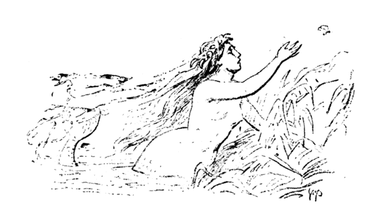
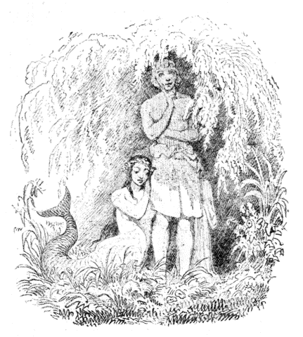
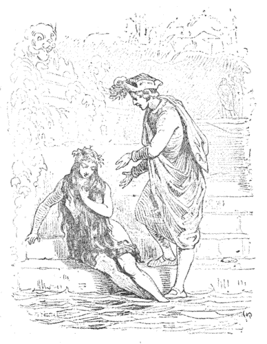
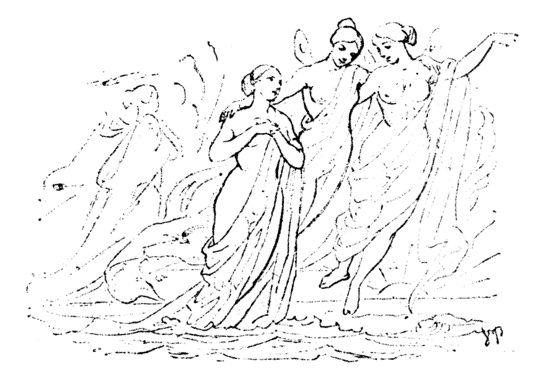

はるか、沖合へでてみますと、海の水は、およそうつくしいやぐるまぎくの花びらのように青くて、あくまですきとおったガラスのように澄みきっています。でも、そこは、ふかいのなんのといって、どんなにながく
ところで、海の底なんて、ただ、からからな砂地があるだけだろうと、そうきめてしまってはいけません。どうして、そこには、世にもめずらしい木や草がたくさんしげっていて、そのじくや葉のしなやかなことといったら、ほんのかすかに水がゆらいだのにも、いっしょにゆれて、まるで生きものがうごいているようです。ちいさいのも、おおきいのも、いろんなおさかなが、その枝と枝とのなかをつうい、つういとくぐりぬけて行くところは、地の上で、鳥たちが、空をとびまわるのとかわりはありません。この海の底をずっと底まで行ったところに、海の人魚の王さまが御殿をかまえています。その御殿の壁は、さんごでできていて、ほそながく、さきのとがった窓は、すきとおったこはくの窓でした。屋根は貝がらでふけていて、海の水がさしひきするにつれて、貝のふたは、ひとりでにあいたりしまったりします。これはなかなかうつくしいみものでした。なぜといって、一枚一枚の貝がらには、それひとつでも女王さまのかんむりのりっぱなそうしょくになるような、大きな
ところで、この御殿のあるじの王さまは、もうなが年のやもめぐらしで、そのかわり、年とったおかあさまが、いっさい、うちのことを引きうけておいでになりました。このおかあさまは、りこうな方でしたけれど、いちだんたかい身分をほこりたさに、しっぽにつける飾りのかきをごじぶんだけは十二もつけて、そのほかはどんな家柄のものでも、六つから上つけることをおゆるしになりませんでした。――そんなことをべつにすれば、たんとほめられてよい方でした。とりわけ、お孫さんにあたるひいさまたちのおせわをよくなさいました。それはみんなで六人、そろってきれいなひいさんたちでしたが、なかでもいちばん下のひいさまが、たれよりもきりょうよしで、はだはばらの花びらのようにすきとおって、きめがこまかく、目はふかいふかい海のようにまっ青でした。ただほかのひいさまたちとおなじように、足というものがなくて、そこがおさかなの尾になっていました。
ながいまる一日、ひいさまたちは、海の底の御殿の、大広間であそびました。そとの壁からは、生きた花が咲きだしていました。大きなこはくの窓をあけると、おさかながつういとはいって来ます。それはわたしたちが窓をあけると、つばめがとび込んでくるのに似ています。ただ、おさかなは、すぐと、ひいさまたちの所まで泳いで行って、その手からえさをとってたべて、なでいたわってもらいました。
御殿のそとには、大きな花園があって、はでにまっ赤な木や、くらいあい色の木がしげっていました。その木の実は金のようにかがやいて、花はほのおのようにもえながら、しじゅうじくや葉をゆらゆらさせていました。海の底は、地面からしてもうこまかい砂でしたが、それは
ひいさまたちは、めいめい、花園のなかに、ちいさい
このひいさまにとつて、海の上にある人間の世界の話をきくほど、おおきなよろこびはありません。おばあさまにせがむと、船のことや、町のことや、人間やけもののことや、知っていらっしゃることはなにもかも話してくださいました。とりわけ、ひいさまにとってめずらしくおもわれたのは、海の底ではついないことなのに、地の上では、お花がにおっているということでした。それと、森がみどり色していて、その森のこずえのなかに、おさかなが、高い、かわいらしい声で歌がうたえて、それがきくひとの耳をたのしくするということでした。その、おばあさまがおさかなとおっしゃったのは、小鳥のことでした。だって、ひいさまたちは、小鳥というものをみたことがないのですもの、そういって話さなければわからないでしょう。
「まあ、あなたたち、十五になったらね。」と、おばあさまはいいました。「そのときは、海の上へ浮かび出ていいおゆるしをあげますよ。そうすれば、岩に腰をかけて、お月さまの光にひたることもできるし、大きな船のとおるところもみられるし、森や町だってみられるようになるよ。」
来年は、いちばん上のおねえさまが、十五になるわけでした。でも、ほかのおねえさまたちは――そう、めいめい、一年ずつ年がちがっていましたから、いちばん下のひいさまが、海の底からあがっていって、わたしたちの世界のようすをみることになるまでには、まる五年も待たなければなりません。でも、ひとりがいけば、ほかのひとたちに、はじめていった日みたこと、そのなかでいちばんうつくしいとおもったことを、かえって来て話す約束ができました。なぜなら、おばあさまのお話だけでは、どうも物たりなくて、ひいさまたちの知りたいとおもうことが、だんだんおおくなって来ましたからね。
そのなかでも、いちばん下のひいさまは、あいにく、いちばんながく待たなくてはならないし、ものしずかな、かんがえぶかい子でしたから、それだけたれよりもふかくこのことをおもいつづけました。いく晩もいく晩も、ひいさまは、あいている窓ぎわに、じっと立ったまま、くらいあい色した水のなかで、おさかながひれやしっぽをうごかして、およぎまわっているのをすかしてみていました。お月さまと星もみえました。それはごくよわく光っているだけでしたが、でも水をすかしてみるので、おかでわたしたちの目にみえるよりは、ずっと大きくみえました。ときおり、なにかまっ黒な影のようなものが、光をさえぎりました。それが、くじらがあたまの上をおよいでとおるのか、またはおおぜい人をのせた船の影だということは、ひいさまにもわかっていました。この船の人たちも、はるか海の底に人魚のひいさまがいて、その白い手を、船のほうへさしのべていようとは、さすがにおもいもつかなかったでしょう。
さて、いちばん上のひいさまも、十五になりました。いよいよ、海の上に出られることになりました。
このおねえさまがかえって来ると、山ほどもおみやげの話がありましたが、でも、なかでいちばんよかったのは、波のしずかな
まあ、いちばん下のひいさまは、この話をどんなに夢中できいたことでしょう。それからというもの、あいた窓ぎわに立って、くらい色の水をすかして上を仰ぐたんびに、このひいさまは、いろいろの物音ととよめきのする、その大きな町のことをかんがえました。するうち、そこのお寺の鐘の音が、つい海の底までも、ひびいてくるようにおもいました。
そのあくる年、二ばんめのおねえさまが、海の上へあがって行って、好きな所へおよいでいっていい、おゆるしがでました。このおねえさまが、浮き上がると、そのときちょうどお日さまが沈みましたが、これこそいちばんうつくしいとおもったものでした。大空がいちめん金をちらしたようにみえて、その光をうつした雲のきれいだったこと、とてもそれを書きあらわすことばはないといいました。くれないに、またむらさきに、それがあたまの上をすうすう通ってながれていきました。けれども、その雲よりももっとはやく、野のはくちょう［＃「はくちょう」は底本では「はくちょう」］のむれが、それはながい、白いうすものが空にただようように、しずんで行く夕日を追って、波の上をとんでいきました。このおねえさまも、これについてまけずにおよいでいきましたが、そのうち、お日さまはまったくしずんで、ばら色の光は、海の上からも、雲の上からも消えていきました。
また次の年には、三ばんめのおねえさまが上がっていきました。このおねえさまは、たれよりもむこうみずな子でしたから、大きな川が海にながれだしている、そこの川口をさかのぼっておよいでいってみました。そこにはぶどうのつるにおおわれたうつくしいみどりの丘がみえました。むかしのお城や
さて、四ばんめのおねえさまは、それほどむこうみずではありませんでしたから、そこで、ひろい大海のまんなかに居ずくまったままでしたが、でもそこがどこよりもいちばんうつくしかったと話しました。もうぐるりいちめん、なんマイルと先の知れないとおくまで見はらせて、あたまの上の青空は、とほうもなく大きなガラス鐘のようなものでした。船というものもみました。でも、それはただ遠くにはなれていて、まるでかもめのようにみえていました。それからおどけもののいるかが、とんぼがえりしたり、大きなくじらが鼻のあなから、しおをふきだして、そのへんいちめんに、なん百とない噴水がふきだしたようでした。
こんどは、五ばんめのおねえさまの番になりました。このひいさまは、おたん生日が、ちょうど冬のあいだでしたので、ほかのおねえさまたちのみなかったものをみました。海はふかいみどり色をたたえて、その上に、氷の山がまわりをとりまいて浮いていました。そのひとつびとつが白く光って、まるで
さて、こうして、おねえさまたちは、めいめいに、はじめて海の上へ浮かんで出てみた
もういく晩も、夕方になると、五人のおねえさまたちは、おたがい手を組んで、つながって、水の上へあがっていきました。みんな、どんな人間もおよばないうつくしい声をもっていました。あらしが来かけると、やがて船はしずむほかないことが分かっていますから、みんなして船のそばへおよいでいって、やさしい歌をうたってやりました。海の底がどんなにうつくしいか、だから船人たちはしずむことをそんなにこわがるにはおよばない、そううたってやるのです。でも、そのことばは、人間には分かりません。それをやはりあらしの音だとおもっていました。それにまた、しずんでいくひとたちが、しずみながら海の底をみるなんて、そんなうまいわけにはいかないのです。なぜなら、船がしずむと、それなり船人はおぼれてしまいます。そうして、しかばねになって、人魚の王さまの御殿へはこばれてくるのですもの。
きょうだいたちが、こうして手をつないで、夕方、水の上へあがっていくとき、いちばん下のひいさまだけは、いつもひとりぼっちあとにのこっていました。そうしてみんなのあとをみおくっていると、なんだか泣かずにいられない気持になりました。けれども［＃「けれども」は底本では「けれとも」］、海おとめには、涙というものがないのです。そのため、よけい、せつないおもいをしました。
「ああ、あたし、どうかしてはやく十五になりたいあ。」と、このひいさまはいいました。「あたしにはわかっている。あの上の世界でも、そこにうちをつくって住んでいる人間でも、あたしきっと好きになれるでしょう。」
するうち、とうとう、ひいさまも十五になりました。
「さあ、いよいよ、あなたも、わたしの手をはなれるのだよ。」と、ごいんきょのおばあさまがおっしゃいました。「では、いらっしゃい、おねえさまたちとおなじように、あなたにもおつくりをしてあげるから。」
こういって、おばあさまは、白ゆりの花かんむりを、ひいさまの髪にかけました。でも、その花びらというのが、一枚一枚、
「そんなことをおさせになって、あたし、いたいわ。」と、ひいさまはいいました。
「身分だけにかざるのです。すこしはがまんしなければね。」と、おばあさまは、おっしゃいました。ああ、こんなかざりものなんか、どんなにふり捨てたかったでしょう。おもたい花かんむりなんか、どんなにほうりだしたかったでしょう、ひいさまは、花壇に咲いている赤い花のほうが、はるかよく似合うことはわかっていました。でも、いまさら、それをどうすることもてきません。
「いってまいります。」と、ひいさまはいって、それはかるく、ふんわりと、まるであわのように、水の上へのぼっていきました。
ひいさまが、海の上にはじめて顔をだしたとき、ちょうどお日さまはしずんだところでした。でもどの雲もまだ、ばら色にも金色にもかがやいていました。そうして、ほの赤い空に、よいの
そのうち、音楽と唱歌の声がして来ました。やがて夕やみがせまってくると、なん百とない色がわりのランプに火がともって、それは各国の国旗が、風になびいているように見えました。人魚のひいさまは、その船室の窓の所までずんずんおよいでいきました。波にゆり上げられるたんびに、ひいさまは、水晶のようにすきとおった窓ガラスをすかして、なかをのぞくことができました。そこには、おおぜい、
夜がふけていきました。それでも、人魚のひいさまは、船からも、そこのうつくしい王子からも、目をはなそうとはしませんでした。色ランプは、とうに消され、花火ももう上がらなくなりました。祝砲もとどろかなくなりました。ただ、海の底で、ぶつぶつごそごそ、ささやくような音がしていました。ひいさまは、やはり水の上にのっかって、上に下にゆられながら、船室のなかをのぞこうとしていました。でも、船はだんだんはやくなり、帆は一枚一枚はられました。するうち、波が高くなって来て、大きな黒雲がわきだしました。遠くでいなづまが、光りはじめました。やれやれ、おそろしいあらしになりそうです。それで水夫たちはおどろいて、帆をまき上げました。大きな船は、荒れる海の上をゆられゆられ、とぶように走りました。うしおが大きな黒山のようにたかくなって、マストの上にのしかかろうとしました。けれど、船は高い波と波のあいだを、はくちょう［＃「はくちょう」は底本では「はくちょう」］のようにふかくくぐるかとおもうと、またもりあがる高潮の上につき上げられてでて来ました。これは海おとめの身にすると、なかなかおもしろい見ものでしたが、船の人たちはどうしてそれどころではありません。船はぎいぎいがたがた鳴りました。さしもがんじょうな船板も、ひどく横腹を当てられて曲りました。マストはまんなかからぽっきりと、まるであしかなんぞのようにもろく折れました。船は横たおしになって、うしおがどどっと、所かまわず船にながれ込みました。ここではじめて、人魚のひいさまも、船の人たちの身の上のあぶないことが分かりました。そればかりかじぶんも、水の上におしながされた船のはりや板きれにぶつからない用心しなければなりませんでした。ふと一時、すみをながしたようなやみ夜になって、まるでものがみえなくなりました。するうち、いなびかりがしはじめるとまたあかるくなって、船の上のようすが手にとるようにわかりました。みんなどうにかして助かろうとしてあがいていました。わかい王子のすがたを、ひいさまはさがしもとめて、それがちらりと目にはいったとたん、船がふたつにわれて、王子も海のそこふかくしずんでいきました。はじめのうち、ひいさまはこれで王子がじぶんの所へ来てくれるとおもって、すっかりたのしくなりました。でも、すぐと、水のなかでは、人間が生きていけないことをおもいだしました。そうすると、この王子も死んで、おとうさまの御殿にいきつくほかはないとおもいました。まあ、この人を死なせるなんて、とんでもないことです。そこで、波のうえにただようはりや板きれをかきわけかきわけ、万一、ぶつかってつぶされることなぞわすれて、夢中でおよいでいきました。で、いったん水のそこふかくしずんで、またたかく波のあいだに浮きあがったりして、やっと、わかい王子の所までおよいでいけましたが、王子は、もうとうに荒れくるう海のなかで、およぐ力がなくなっていて、うつくしい目もとじていました。人魚のひいさまが、そこへ来てくれなかったら、それなり死ぬところだったでしょう。ひいさまは、王子のあたまを水の上にたかくささげて、あとは、波が、じぶんと王子とを、好きな所へはこぶままにまかせました。
そのあけがた、ひどいあらしもやみました。船のものは、
そのとき、そこの大きな白い建てもののなかから、鐘がなりだしました。そうして、その園をとおって、わかい少女たちがおおぜい、そこへでて来ました。そこで、人魚のひいさまは、ずっとうしろの水の上に、いくつか岩の突き出ている所までおよいでいって、その陰にかくれました。たれにも顔のみえないように、髪の毛にも胸にも、海のあわをかぶりました。こうしてきのどくな王子のそばへ、たれがまずやってくるか、気をつけてみていました。
もうまもなく、ひとりのわかいむすめが、そこへ来ました。むすめはたいへんおどろいたようでしたが、ほんのちょっとのあいだで、すぐとほかの人たちをつれて来ました。人魚のひいさまがみていますと、王子はとうとういのちをとりとめたらしく、まわりをとりまいているひとたちに、にんまりほほえみかけました。けれど、ひいさまのほうへは
いったいに、いつもものしずかな、ふかくおもい込むたちのひいさまでしたけれど、これからは、それがよけいひどくなりました。おねえさまたちは、この妹が、海の上ではじめてみて来たものがなんであったか、たずねましたが、ちょっぴりともその話はしませんでした。

晩に、朝に、いくたびとなく、このひいさまは、王子をおいて来た浜ちかく上がっていってみました。園のくだものが実のって、やがてもがれるのもみました。山山のいただきに、雪の消えるのもみました。けれども、ひいさまは、もう王子のすがたをみることはありませんでした。そうして、そのたんびに、いつもよけいせつないおもいでかえって来ました。こうなると、ただひとつのたのしみは、れいのちいさな花壇のなかで、うつくしい王子に似た大理石の像に、両腕をかけることでした。けれども花壇の花にはもうかまわなくなりました。それは、路のうえまで茂りほうだいしげって、そのながくのびたじくや葉を、あたりの木の枝に、所かまわずからみつけましたから、そこらはどこも、おぐらくなっていました。
とうとう、いつまでもこうしているのが、ひいさまにはたえられなくなりました。それで、ひとりのおねえさまにうちあけますと、やがて、ほかのおねえさまたちの耳にもはいりました。でも、このひいさまたちと、そのほかに二、三人の、海おとめたちのほかたれ知るものはなく、そのおとめたちも、ただごく仲のいいお友だちのあいだでその話をしただけでした。ところで、そのお友だちのうちに、ひとり、王子を知っているむすめがありました。それから、あの晩、船の上でお祝のあったこともみていました。そのむすめは、王子がどこから来たひとで、その王国がどこにあるかということまで知っていました。
「さあ、いってみましょうよ。」と、おねえさまたちは、いちばん下のちいさい妹をさそいました。そうして、おたがい腕を肩にかけて、ながい列を組んで、海の上にうき上がりました。そこは王子の御殿のあるときいた所でした。
その御殿は、クリーム色に光をもった石で建てたものでしたが、そこのいくつかある大理石の階段のうち、ひとつはすぐと海へおりるようになっていました。平屋根の上には、一だんたかく、金めっきしたりっぱな
こうして王子のすみかがわかると、それからは、もう夕方から夜にかけて、毎晩のように、そこの水の上に、妹のひいさまはでてみました。もうほかの人魚たちのいきえない丘ちかくの所までも、およいでいきました。ついには、せまい水道のなかにまでくぐって、そのながい影を水の上に投げている大理石の
夕方、たびたび、王子はうつくしいヨットに帆をはって、音楽をのせて、風に旗を吹きなびかせながら、海の上を走らせるところを、ひいさまは見ました。ひいさまは、それを青青としげったあしの葉のあいだからすきみしました。すると風が来て、ひいさまの銀いろしたながいヴェールをひらひらさせました。たまにそれを見たものは、はくちょうがつばさをひろげたのだとおもいました。
夜な夜な、船にかがりをたいて、りょうに出るりょうしたちからも、ひいさまはたびたび、わかい王子のいいうわさをききました。そうして、そんなにもほめものになっているひとが波の上に死にかけてただよっているところを、じぶんがすくったのだとおもってうれしくなりました。それから、あのとき、あの方のおつむりは、なんておだやかにあたしの胸のうえにのっていたことかしら、それをあたしはどんなに心をこめて、ほおずりしてあげたことかしらとおもっていました。そのくせ、王子のほうでは、むろんそういうことをまるで知りませんでした。つい、夢にすらみてはくれないのです。
だんだんに、だんだんに、人間というものが、とうとくおもわれて来ました。だんだんに、だんだんに、どうぞして人間のなかまにはいっていきたいと、ねがうようになりました。人間の世界は、人魚の世界にくらべて、はるかに大きくおもわれました。人間は、船にのって海の上をとびかけることもできますし、雲よりもたかい山にのぼることもできました。人間のいる国ぐにには森も畑もあって、それは人魚の目のとどかないとおくまではてしなくひろがっていました。そこで、このひいさまの知りたいことは山ほどあっても、おねえさまたちのちからでは、そののこらずにこたえることはできません。ですから、おばあさまにうかがうことにしました。このあばあさまはさすがに、上の世界のことをずっとよく知っておいでになりました。上の世界というのは、このおばあさまが、まことにうまく、海の上の国ぐにに名づけたものでした。
「ねえ、おばあさま、人間は、水におぼれさえしなければね、」と、ひいさまはたずねました。「それはいつまででも生きられるのでしょう。あたしたち海のそこのもののようには死なないのでしょう。」
「どうしてさ。」と、おばあさまは、おっしゃいました。「人間だって、やはり死ぬのですよ。わたしたちよりも、かえって
「なぜ、あたしたち、死なないたましいをさずからなかったの。」と、人魚のひいさまは、かなしそうにいいました。「あたし、なん百年の寿命なんてみんなやってしまってもいいわ。そのかわり、たった一日でも人間になれて、死んだあとで、その天国とやらの世界へのぼるしあわせをわけてもらえるならね。」
「まあ、そんなことをおもうものではないよ。」と、おばあさまはおっしゃいました。「わたしたちは、あの上の世界の人間なんかより、ずっとしあわせだし、ずっといいものなのだからね。」
「でも、あたし、やはり死んであわになって、海の上にういて、もう波の音楽もきかれないし、もうきれいな花もみられないし、赤いお日さまもみられなくなるのですもの。どうにかして、ながいいのちのたましいを、さずかるくふうってないものかしら。」
「それはあるまいよ。」と、おばあさまはいいました。「だがね、こういうことはあるそうだよ。ここにひとり人間があってね、あなたひとりが好きになる。そう、その人間にとっては、あなたというものが、おとうさまやおかあさまよりもいいものになるのだね。そうして、それこそありったけのまごころとなさけで、あなたひとりのことをおもってくれる。そこで、お坊さまが来て、その人間の右の手をあなたの右の手にのせて、この世も、ながいながいのちの世もかわらない、かたい約束を立てさせる。そうなると、その人間のたましいがあなたのからだのなかにながれこんで、その人間のしあわせを分けてもらえることになる。しかも、その人間はあなたにたましいを分けても、じぶんのたましいはやはりなくさずにもっているというのさ。だが、そんなことはけっしてありっこないよ。だって、この海のそこの世界でなによりうつくしいものにしているおさかなのしっぽを、地の上ではみにくいものにしているというのだもの。それだけのよしあしすら、むこうはわからないものだから、むりに二本、ぶきような、つっかい棒みたいなものを、かわりにつかって、それに足という名をつけて、それでいいつもりでいるのだよ。」
そういわれて、人魚のひいさまも、いまさらため息しながら、じぶんのおさかなの尾にいじらしくながめ入りました。
「さあ、陽気になりましょう。」と、おばあさまはいいました。「せっかくさずかることになっている三百年の寿命です。そのあいだは、好きにおどってはねてくらすことさ。それだけでもずいぶんながい一生ですよ。それだけに、あとはきれいさっぱり、安心して休めるというものだ。今夜は宮中
さて、この舞踏会が、なるほど、地の上の世界では見られないごうかなものでした。大きな舞踏の間の壁と
「まあ、いまごろ、あの方きっと、
そこで、人魚のひいさまは、花園をでて、ぶつぶつあわ立つうず巻の流れのなかへむかっていきました。このうず巻のむこうに、魔女のすまいがありました。こんな道をとおるのははじめてのことでした。そこには花も咲いていず、
やがて、ひいさまは、森のなかの広場のぬるぬるすべる沼のような所へ来ました。そこには脂ぶとりにふとった水へびが、くねくねといやらしい
「ご用むきはわかっているよ。」と、海の魔女はいいました。「ばかなことかんがえているね。だが、まあ、したいようにするほかはあるまい、そのかわり、べっぴんのおひいさん、その男ではさぞつらいめをみることだろうよ。おまえさん。そのおさかなのしっぽなんかどけて、かわりに二本のつっかい棒をくっつけて、人間のようなかっこうであるきたいのだろう。それでわかい王子をつって、ついでに死なないたましいまで、手に入れようってのだろう。」
こういって、魔女はとんきょうな声をたてて、うすきみわるくわらいました。そのひびきで、かえるもへびも、ころころところげおちて、のたくりまわっていました。
「おまえさん、ちょうどいいときに来なすったよ。」と、魔女はいいました。「あしたの朝、日が出てしまうと、もうそのあとでは、また一年まわってくるまで、どうにもしてあげられないところだったよ。では、くすりを
「ええ、しますわ。」と、人魚のひいさまは、声をふるわせていいました。そうして、王子のことと、それから、死なないたましいのことを、しっかりとおもっていました。
「でも、おぼえておいで。」と、魔女はいいました。「おまえさんは、いちど人間のかたちをうけると、もう二どと人魚にはなれないのだよ。海のなかをくぐって、きょうだいたちのところへも、おとうさんの御殿へもかえることはできないし、それから王子の愛情にしても、もうおまえさんのためには、おとうさんのこともおかあさんのこともわすれて、あけてもくれてもおまえさんのことばかりを、かんがえていて、もうこの上は、お坊さんにたのんで、王子とおまえさんとふたりの手をつないで、晴れてめおととよばせることにするほかない、というところまでいかなければ、やはり、死なないたましいは、おまえさんのものにはならないのだよ。それがもしかちがって、王子がほかの女と結婚するようなことになると、もうそのあくる朝、お前さんの
「かまいません。」と、人魚のひいさまはいいました。けれど、その顔は死人のように青ざめていました。
「ところで、おまえさん、お礼もたっぷりもらわなきゃならないよ。」と、魔女はいいました。「どうして、わたしののぞむお礼は、お
「でも、あたし、声をあげてしまったら、」と、ひいさまは、いいました。「あとになにがのこるのでしょう。」
「なあに、まだ、そのうつくしいすがたが、」と、魔女はいいました。「それから、そのかるい、うくようなあるきつきが、それから、そのものをいう目があるさ。それだけで、りっぱに人間のこころをたぶらかすことはできようというものだ。はてね、勇気がなくなったかね。さあ、その舌をお出し、それを代金にはらってもらう。そのかわり、よくきくくすりをさし上げるよ。」
「ええ、そうしてください。」と、人魚のひいさまはいいました。そこで、魔女は、おなべを火にかけて、魔法ののみぐすりを煮はじめました。
「ものをきれいにするのは、いいことさ。」と、魔女はいって、へびをくるくるとむすびこぶにまるめて、それでおなべをみがきました。それからじぶんの胸をひっかいて、黒い血をだして、そのなかへたらしこみました。その湯気が、なんともいえないふしぎなきみのわるい形で、むくむくと立って、身の毛もよだつようでした。
魔女はしじゅうそれからそれと、なにくれとおなべのなかへ投げ込んでいました。やがて、ぼこぼこ煮え立ってくると、それが＊わにの泣き声に似た音を立てました。とうとう、のみぐすりが煮え上がりましたが、それはただ、すみ切った水のようにみえました。
＊わにはこどもの泣声に似た声をだしておびきよせるという西洋中世のいいつたえがある。
「さあ、できましたよ。」と、魔女はいいました。そこで、のみぐすりをわたして、代りにひいさまの舌を切りました。もうこれで、ものもいえず、歌もうたえない、おしになったのです。
「もしか、かえりみちに、森のなかをとおって、さんご虫どもにつかまりそうになったらね。」と、魔女はいいました。「このくすりをたった一てきでいい、たらしておやり、そうすると、やつら、腕も指もばらばらになってとんでしまう。」
けれど人魚のひいさまは、そんなことをしないでもすみました。さんご虫は、ひいさんの手のなかで、星のようにきらきらするのみぐすりをみただけで、おじけて引っこみました、それで、苦もなく、森もぬけ、すくも田もとおって、うずまきの流れもくぐってかえりました。
そこに、おとうさまの御殿がみえました。大きな

ひいさまが、王子のお城をみつけて、そこのりっぱな階段を上がっていったとき、お日さまはまだのぼっていませんでした。お月さまだけが、うつくしくさえていました。人魚のひいさまは、やきつくように、つんとつよいくすりをのみました。すると、きゃしゃなふしぶしに、するどいもろ刄のつるぎを、きりきり突きとおされたようにかんじて、それなり気がとおくなり、死んだようになってたおれました。やがて、お日さまの光が、海の上にかがやきだしたとき、ひいさまは目がさめました。とたんに、切りさかれるような痛みをかんじました。けれど、もうそのとき、すぐ目のまえには、うつくしいわかい王子が立っていました。王子は、うるしのような黒い目でじっとひいさまをみつめていました。はっとして、ひいさまは目を伏せました。すると、あのおさかなのしっぽは、きれいになくなっていて、わかいむすめだけしかないような、それはそれはかわいらしい、まっ白な二本の足とかわっているのが、目にはいりました。でも、まるっきり、からだをおおうものがないので、ひいさまは、ふっさりとこくながい髪の毛で、それをかくしました。王子はそのとき、いったい、あなたはたれかどこから来たのかといって、たずねました。ひいさまは、王子の顔を、やさしく、でも、あくまでかなしそうに、そのこいあい色の目でみあげました。もう、口をききたくもきけないのです。そこで、王子はひいさまの手をとって、お城のなかへつれていきました。なるほど、魔女があらかじめいいきかせていたように、ひいさまは、ひと足ごとに、とがった針か、するどい刄ものの上をふんであるくようでしたが、いさんで、それをこらえました。王子の手にすがって、ひいさまは、それこそシャボン玉のようにかるく上がっていきました。すると、王子もおつきの人たちもみんな、ひいさまのしなやかな、かるい足どりをふしぎそうに見ました。
さて、ひいさまは、絹とモスリンの高価な着物をいただいて着ました。お城のなかでは、たれひとりおよぶもののないうつくしさでした。けれど、おしで、歌をうたうことも、ものをいうこともできません。絹に金のぬいとりした着物を着かざったうつくしい女のどれいたちがでて来て、王子と、王子のご両親の王さま、お
「ああ、王子さまのおそばに来たいばかりに、あたしは、みらいえいごう、声をひとにやってしまったのです。せめて、それがおわかりになったらね。」と、ひいさまはおもっていました。
こんどは、女のどれいたちが、それはけっこうな音楽にあわせて、しとやかに、かるい足どりで、おどりました。すると、人魚のひいさまも、うつくしい白い腕をあげて、つま先立ちして、たれにもまねのならないかるい身のこなしで、ゆかの上をすべるようにおどりあるきました。ひとつひとつ、しぐさをかさねるにしたがって、この人魚のひいさまの世にないうつくしさが、いよいよ目に立ちました。その目のはたらきは、どれいたちの女の歌とくらべものにならない、ふかいいみを、見る人びとのこころに語っていました。
そこにいた人たちは、たれも、酔ったようになっていました。とりわけ、王子は、ひいさまの名を「かわいいひろいむすめさん」とつけてよろこんでいました。ひいさまは、いくらでもおどりつづけました。そのくせ地に足がふれるたんびに、するどい刄ものの上をふむようでした。王子は、いつまでもじぶんの所にいるようにといって、すぐじぶんのへやのまえの、びろうどのしとねにねることをゆるしました。
王子は、ひいさまを馬にのせてつれてあるけるように、男のお
うちで、王子のお城のなかにいるとき、夜な夜な、ほかのひとたちのねむっているあいだに、ひいさまは、大理石の階段のうえに出ました。そうして、もえるような足を、つめたい海の水にひたしました。そうしているうち、はるか下の海のそこの、わかれて来たひとたちのことが、こころにうかんで来ました。
そういう夜のつづいているとき、ある晩、夜ぶかく、人魚のおねえさまたちが、手をつなぎあってでて来ました。波のうえにうきながら、おねえさまたちは、かなしそうにうたいました。ひいさまが手まねきして知らせると、むこうでもみつけて、あちらでは、みんな、どんなにさびしがっているか話してきかせました。それからは、毎晩のように、このおねえさまたちはでて来ました。いちどなどは、もう何年とないひさしい前から、海の上にでておいでにならなかつたおばあさまの姿を、とおくでみつけました。かんむりをおつむりにのせたおとうさまの人魚の王さまも、ごいっしょのようでした。おばあさまも、おとうさまも、ひいさまのほうへ手をさしのべましたが、おねえさまたちのようには、おもいきっておか近くへ寄りませんでした。
日がたつにつれて、王子はだんだん人魚のひいさまが好きになりました。王子は、心のすなおな、かわいいこどもをかわいがるように、ひいさまをかわいがりました。けれど、このひいさまを、お
「わたくしを、だれよりもいちばんかわいいとはおおもいにならなくて。」と、王子が人魚のひいさまを腕にかかえて、そのうつくしいひたえにほおをよせるとき、ひいさまの目は、そうたずねているようにみえました。
「そうとも、いちばんかわいいとも。」と、王子はいいました。「だって、おまえはだれよりもいちばんやさしい心をもっているし、いちばん、ぼくをだいじにしてつかえてくれる。それに、ぼくがいつかあったことがあって、それなりもう二どとはあえまいとおもうむすめによく似ているのだよ。ぼくはあるとき、船にのって、
「ああ、あの方は、あの方のおいのちをたすけてあげたのは、このあたしだということをお知りにならないのね。」と、人魚のひいさまはおもいました。「あたし、あの方をかかえて海の上を、お寺のある森の所まではこんであげたのだわ。あたし、そのとき、あわのかげにかくれて、たれかひとは来ないかみていたのだわ。あの方が、あたしよりもっと好きだとおっしゃるそのうつくしいむすめも、みて知っている。」と、ここまでかんがえて、人魚のひいさまは、ふかいため息をしました。人魚は泣きたくも泣けないのです。「でも、そのむすめさんは、とうといお寺につかえている身だから、世の中へでてくることはないと、あの方はおっしゃった。おふたりのあうことはきっともうないのね。あたしはこうしてあの方のおそばにいる。まいにち、あの方のお顔をみている。あたし、あの方をよくいたわってあげよう。あの方にやさしくしよう、あたしのいのちを、あの方にささげよう。」
ところが、そのうちに、王子がいよいよ結婚することになった、おとなりの王国のきれいなお姫さまをお
こんどの王子の旅行は、おもてむき、おとなりの王国を
王子の心は、たれよりもよく、このひいさまに分かっているはずでした。
「ぼくは旅をしなければならないよ。」と、王子は人魚のひいさまにいいました。「きれいな王女のお姫さまにあいにいくのさ。おとうさまとおかあさまのおのぞみでね。だが、ぜひともそのお姫さまをぼくのおよめにもらって来いというのではないよ。だが、ぼくはそのお姫さまが好きにはなれまいよ。おまえがそれにそっくりだといった、あのお寺のきれいなむすめには似ていないだろうからね。そのうち、どうしてもおよめえらびをしなければならなくなったら、ぼくはいっそおまえをえらぶよ。口はきけないかわり、ものをいう目をもっている、ひろいむすめのおまえをね。」
こういって、王子は、ひいさまのあかいくちびるにくちをつけました。それからながい髪の毛をいじって、その胸に顔をおしつけました。それだけでもうひいさまのこころには、人間にうまれた幸福と、死なないたましいのことが、夢のようにうかびました。
「でも、おしのひろいむすめさんは、海をこわがりはしないだろうね。」と、王子はいいました。そのとき、ふたりは、おとなりの王さまの国へ行くはずのりっぱな船の上にいました。それから王子に、海のしけとなぎのこと、海のそこのふしぎな魚のこと、そこで
月のいい晩で、
ひいさまは、おねえさまたちにあいずして、にっこりわらいかけて、こちらは不足なくしあわせにしている話をしようとすると、そこへ、船のボーイがふしんらしく寄って来たので、おねえさまたちは水にもぐりました。それで、ボーイも、いま、ちらと白いものがみえたのは、海のあわであったかとおもって、それなりにしてしまいました。
そのあくる朝、船はおとなりの王さまの国の、きらびやかな都の港にはいっていきました。町のお寺の鐘が、いっせいに鳴りだしました。そこここのたかい塔で、大らっぱを吹きたてました。そのなかで兵隊が、旗を立てて、銃剣をひからせて行列しました。
さて、それからは、まいにち、なにかしらお祝ごとの催しがありました。
人魚のひいさまも、いったいどんなにうつくしいのか、はやくそのひとをみたいものだと、気にかかっていましたが、いまみて、いかにも人がらの
「あなたでしたよ。」と、王子はいいました。「そう、［＃「「そう、」は底本では「そう、」］あなたでした。ぼくが死がいも同様で海岸にうち上げられていたとき、すくってくださったのは。」
こう、王子はいつて、顔をあからめている花よめを、しっかり胸にかかえました。
「ああ、ぼくはあんまり幸福すぎるよ。」と、王子は、人魚のひいさまにいいました。「最上の望みが、しょせん望んでもむだだと［＃「むだだと」は底本では「むただと」］あきらめていたそれが、みごとかなったのだもの、おまえ、ぼくの幸福をよろこんでくれるだろう、だっておまえは、どのだれにもまさって、ぼくのことをしんみにおもっていてくれたのだもの。」
こういわれて、人魚のひいさまは、王子の手にくちびるをあてましたが、
のこらずの［＃「 のこらずの」は底本では「のこらずの」］お寺の鐘が、かんかん鳴りわたりました。先ぶれは町じゅう馬をはしらせて、ご
もうその夕方、花よめ花むこは、船にのって海へ出ました。大砲がなりとどろいて、あるだけの旗がひるがえりました。船のまん中には、王家ご用の金とむらさきの
帆は風でふくれて、船は、鏡のように平らな海の上を、かるく、なめらかにすべって行きました。くらくなると、さまざまな色ランプがともされて、水夫たちは、甲板にでて、おどけた踊をおどりました。人魚のひいさまも、はじめて海からでて来て、この晩のような
王子をみるのも、今夜がかぎりということを、ひいさまは知っていました。このひとのために、ひいさまは、親きょうだいをも、ふるさとの家をも、ふり捨てて来ました。せっかくのうつくしい声もやってしまったうえ、くる日もくる日も、はてしないくるしみにたえて来ました。そのくせ、王子のほうでは、そんなことがあったとは、ゆめおもってはいないのです。ほんとうに、そのひととおなじ空気を吸っていて、ふかい海と星月夜の空をながめるのも、これがさいごの夜になりました。この一夜すぎれば、ものをおもうことも、夢をみることもない、ながいながいやみが、たましいをもたず、ついもつことのできなかった、このひいさまを待っていました。船の上では、でも、たれも陽気にたのしくうかれて、
船の上は、ひっそり人音もなくなりました、ただ、
「あたしたち、髪を魔女にやってしまったのよ、あなたをたすけてもらおうとおもってね。なんでもあなたを今夜かぎり死なせたくないのだもの。すると魔女が、ほらこのとおり、短刀をくれましたの。ごらん、ずいぶんよく切れそうでしょう。お日さまののぼらないうち、これで王子の胸をぐさりとやれば、そのあたたかい血が足にかかって、それがひとつになって、おさかなの尾になるの。するち、あんたはまたもとの人魚のむすめになって、海のそこのあたしたちの所にかえれて、このまま死んで塩からい海のあわになるかわりに、このさき三百年生きられるでしょう。さあ、はやくしてね。王子が死ぬかあんたが死ぬか、お日さまののぼるまでに、どちらかにきめなくてはならないのよ。おばあさまは、あまりおなげきになったので、白いお
こういって、おねえさまたちは、いかにもせつなそうにため息をつくと、波のなかにすがたをかくしました。
人魚のひいさまは、
いま、お日さまは、海の上にのぼりました。その光は、やわらかに、あたたかに、死のようにつめたいあわの上にさしました。人魚のひいさまは、まるで死んで行くような気がしませんでした。あかるいお日さまの方を仰ぎました。すると、空の上に、なん百となく、すきとおるような
「どこへ、あたし、いくのでしょうね。」と、人魚のひいさまは、そのときたずねました。その声は、もうそこらにうきただよう
「大空のむすめたちのところへね。」と、ほかのただよう

そのとき、人魚のひいさまは、神さまのお日さまにむかって、光る手をさしのべて、生まれてはじめての涙を目にかんじました。――そのとき、船の上は、またもがやがやしはじめました。王子と花よめがじぶんをさがしているのを、ひいさまはみました。ふたりは、かなしそうに、わき立つ海のあわをながめました。ひいさまが海にはいってそれがあわになったことを知っているもののようでした。目にはみえないながら、ひいさまは、花よめのひたいにせっぷんをおくって、王子にほほえみかけました。さて、ほかの大空のむすめたちとともども、そらのなかにながれてくるばら色の雲にまぎれて、たかくのぼって行きました。
「すると、三百年たてば、あたしたち、こうしてただよいながら、やがて神さまのお国までものぼって行けるのね。」
「いいえ、そう待たないでも、いけるかもしれませんの。」と、大空のむすめのひとりがささやいてくれました。「目にはみえないけれど、あたしたちは、こどもたちのいるところなら、どの人間の家にもただよっています。そこで毎日、その親たちをよろこばせ、その